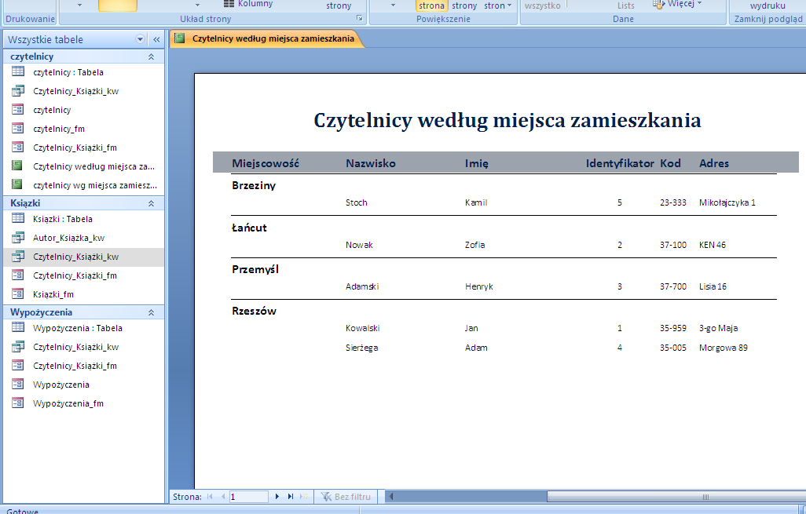

Raporty w bazie danych.
Raport to obiekt bazy danych przydatny do prezentowania informacji z bazy danych w następujących przypadkach:
- Prezentacja lub rozpowszechnianie podsumowania danych
- Archiwizacja migawek danych
- Udostępnianie szczegółowych informacji na temat poszczególnych rekordów
- Tworzenie etykiet
Wyróżniamy takie rodzaje raportów jak:
- Raport szczegółowy
- Raport pogrupowany
- Raport podsumowujący
- Raport z etykietami adresowymi
- Raport wielokolumnowy
Instrukcja tworzenia raportów przy użyciu Kreatora autoraportów
- W oknie Baza danych kliknij pozycję Raporty
- W oknie Baza danych kliknij przycisk Nowy
- W oknie dialogowym Nowy raport kliknij jedną z opcji:
- Autoraport Kolumnowy- Każde pole znajduje się w oddzielnym wierszu a opisująca je etykieta jest umieszczona po jego lewej stronie.
- Autoraport Tabelaryczny- Pola z poszczególnych rekordów są umieszczone w jednym wierszu, a etykiety są drukowane tylko na górze strony.
- Wybierz tabelę lub kwerende której ma dotyczyc raport
- Kliknij przycisk OK
